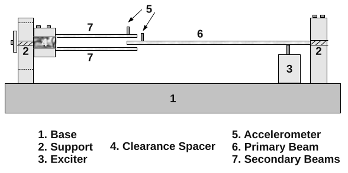
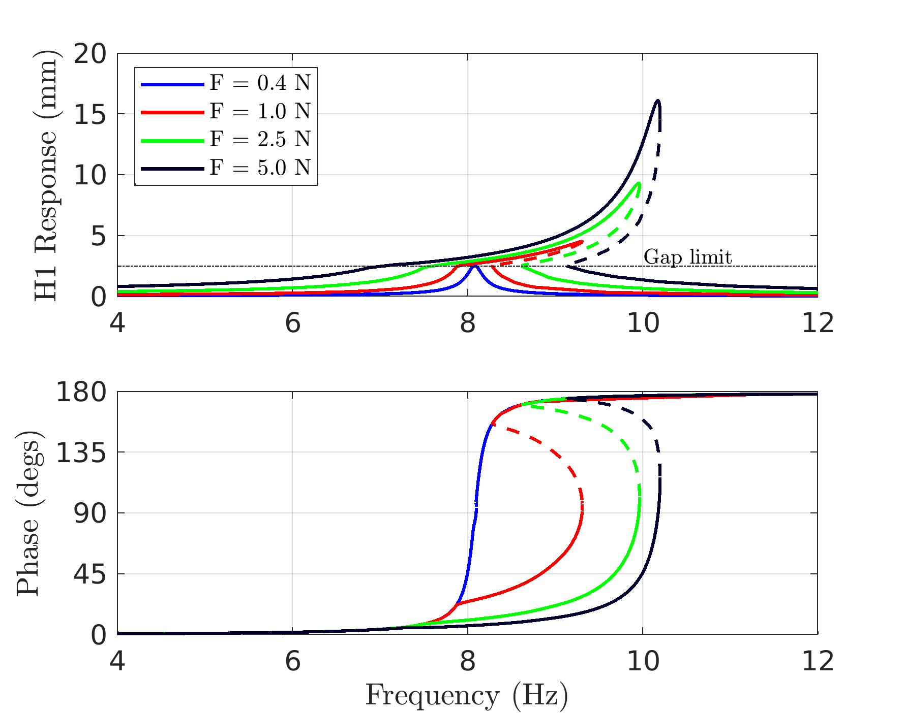

WaveVib - An OCTAVE/MATLAB Toolbox for Wave-Based Modeling of Nonlinear Jointed Structures
Table of Contents
- 1. Introduction
- 2. Programming Interface
- 2.1. Specification of a Library of Dispersion Relationships
- 2.2. Specification of the Pieces of a Model
- 2.3. Specification of Boundary Conditions
- 2.4. Specification of Joints
- 2.5. Computation of Linear Analysis Quantities
- 2.6. Nonlinear Periodic Response Analysis
- 2.7. Continuation of Nonlinear Periodic Responses
- 2.8. Post-Processing
- 2.9. Advanced Interfaces
- 3. Examples
- 4. Development Avenues
- 5. References
1. Introduction
WaveVib is intended to be a set of OCTAVE/MATLAB routines that can be used to study wave-based linear and nonlinear structures. The main advantage with using this approach comes from the fact that the linear portions of the problem are represented without any approximation (unlike weighted residual or variational approaches). The interface supports both periodic as well as quasi-periodic steady state response regimes. Immediate use cases include jointed beams, trusses, frame structures, fluid-filled columns, rotordynamics, etc.
A good starting place for the new user to the Wave-Based Modeling (WBM) framework &/or this package are the papers [1], [2], upon which most of the rudiments of this package are based. The code is hosted on github here: https://github.com/Nidish96/wavevib
1.1. The different folders in the repository
- ROUTINES Contains the core routines of the package.
- EXAMPLES Contains examples with most of the core functionality
- REPS Contains miscellaneous reports (under REPn folders)
- docs Contains this main documentation
- DEVEL_QPER Contains development scripts used for development of the quasi-periodic response routines & examples.
- DEVEL_PER [Obsolete] Contains development scripts used for development of the periodic response routines & examples.
2. Programming Interface
The purpose of this section is to provide a description of the programming interface incorporated in the design of WaveVib. Fig. 1 presents an overview of the software plan graphically.
Figure 1: The WaveVib Software Plan
WaveVib is meant to serve as a toolbox that provides a few generic core routines that help define geometries, materials, joints, excitation, as well as other point-features. These routines are therefore written agnostic of the exact types of problems being dealt with. The following subsections are ordered in such a manner so as to aid usage by being read in order.
2.1. Specification of a Library of Dispersion Relationships
2.2. Specification of the Pieces of a Model
2.3. Specification of Boundary Conditions
2.4. Specification of Joints
2.4.1. Fused Joints
2.4.2. Linear Joints
2.4.3. Nonlinear Joints
2.5. Computation of Linear Analysis Quantities
2.5.1. Linear Jacobian and Force vector
2.5.2. Linear Modal Analysis
2.6. Nonlinear Periodic Response Analysis
2.7. Continuation of Nonlinear Periodic Responses
2.7.1. Stability of Nonlinear Solutions
2.8. Post-Processing
2.9. Advanced Interfaces
2.9.1. Minimalized Representation
2.9.2. Quasi-Periodic Response Analysis
3. Examples
3.1. Single Bar
This is by far the simplest example and can be used as a starting point to understand the usage of the tool. It conducts the analysis of a fixed-fixed 1D bar with the material properties in tab. 1.
| Young's Modulus (MPa) | Density (kg/m3) | Length (m) |
|---|---|---|
| 262 | 1280 | 1 |
3.1.1. Code Overview
Add the necessary directories to Path and Setup the model parameters
1: clc 2: clear all 3: addpath('../ROUTINES/SOLVERS/') 4: addpath('../ROUTINES/WBM/') 5: 6: set(0,'defaultAxesTickLabelInterpreter', 'default'); 7: set(0,'defaultTextInterpreter','latex'); 8: set(0, 'DefaultLegendInterpreter', 'latex'); 9: set(0,'defaultAxesFontSize',13) 10: 11: %DESCRIPTION: This shows the most basic example of a 1D bar fixed at both 12: %ends. 13: 14: %% Setup model 15: Ey = 2.62e11; 16: rho = 1280; 17: ell = 1.0;
Declare the dispersion relationship
The governing equations for the bar is
\begin{align} \label{org732a021} \rho \frac{\partial^2 u}{\partial t^2} - E_y \frac{\partial^2 u}{\partial x^2} &= 0 \qquad x\in (0, \ell)\\ u &= 0 \qquad x=0, \ell. \end{align}Using the standard ansatz $u(x,t)=\frac{U}{2} ej(kx-ω t)+c.c.$, the continuum domain yields the dispersion relationship,
\begin{equation} \label{orgac2c772} k(\omega) = \pm \frac{\omega}{\sqrt{E_y/\rho}}. \end{equation}This is provided to wavevib using the following code:
18: Klib = struct('K', @(w,xi) w/sqrt(Ey/rho)); 19: wcomps = [1j 1; % First component -> exp( j k x ) 20: -1j 1]; % Sec component -> exp(-j k x )
Klib is meant to be an array of structures, with each element holding a field K storing a function handle to a dispersion relationship that is parameterized by frequency w and some parameters (could be a vector of parameters) xi.
The matrix wcomps provides information about the different wave components. Each row corresponds to a different wave component (forward traveling and backward traveling axial waves in this case), with the first column being a premultiplier (typically \(\pm 1, \pm j\)) and the second column denoting the element of Klib to choose (here it is just 1). In the above, the two wave components are the forward traveling and backward traveling axial waves. Note that in the ansatz we have the temporal component occurring as \(e^{-j\omega t}\), meaning \(+j k\) implies forward traveling and \(-j k\) implies backward traveling in this notation.
Under this notation, the wave-based representation of the solution is,
\begin{equation} \label{orgde94010} u(x,t) = (a^+ e^{jkx}+a^- e^{-jkx})e^{-j\omega t} + c.c. \end{equation}Setup the wave-based pieces
Now we setup the different continuum "pieces" in the model. Here we just have a single piece.
21: % Setup "wave-based pieces" 22: pcs = struct('coords', [0;ell], 'wcomps', wcomps); 23: % Note: The coordinates can be 3D also. The rows are interpreted as 24: % individual points. Coordinates not given are assumed to be zeros.
The coordinates are strictly interpreted as though the rows are different points and columns (max. 3) are the cartesian coordinates of the point. If multiple columns are not given, they are assumed to be zero.
The wcomps matrix created before is supplied at this point. Each piece is associated with wave components defined in such a fashion. Note that different pieces in a single model can have different wave components, but this functionality has to be checked and possibly debugged first.
Setup the boundary conditions
A fixed boundary condition is given above in eq. \eqref{org732a021}. Employing the ansatz (eq. \eqref{orgde94010}) at such a point yields
\begin{equation} \label{org9ba0696} u(0,t) = 0 \implies \begin{bmatrix} 1 & 1 \end{bmatrix} \begin{bmatrix} a^+\\ a^- \end{bmatrix} = 0 \end{equation}as the wave-based representation of this boundary condition. The following code provides this information for wavevib.
25: % Setup Boundary Conditions 26: bcs = [struct('i', 1, 'cofs', @(w,xi) [1 1]); % fixed end at point 1 27: struct('i', 2, 'cofs', @(w,xi) [1 1])]; % fixed end at point 2 28: % Note: The BC coefficients are given as function handles in two 29: % parameters, (w,xi). The first is interpreted as frequency and the second 30: % is left to the discretion of the user. The number of columns has to be 31: % equal to the number of wave components in each case.
The parameter i denotes the point at which to apply the boundary condition (counted from the order given under the pcs structure), and cofs are the coefficients (functions of (w,xi)) as mentioned above.
Preprocess the inputs
Now that the required inputs have been prepared, waveVib has to "preprocess" the inputs to generate useful information. It is in this step that wavevib generates the required gradients of the provided coefficients. These derivatives are computed in WaveVib through Matlab's symbolic toolbox and then stored as anonymous functions. This might make the WBPREPROC function slightly slow to call, but during execution of the linear or nonlinear analyses, no symbolics is used and will thus be quite fast. This is because symbolics are used to compute the expressions only, but are not saved - these expressions are converted to regular matlab expressions before saving them.
32: %% Preprocess inputs 33: % This step computes the analytical derivatives for expressions given above 34: [pcs, bcs, ~, ~, Klib] = WBPREPROC(pcs, bcs, [], [], Klib); 35: % Note: the empty inputs are used to specify joints and excitation (see the 36: % other examples)
Inspect the Linear Jacobian Determinant
The determinant of the linear Jacobian of this problem will have to be zero at resonance and non-zero elsewhere. We compute this at a range of frequency values and plot them.
37: %% Compute determinant of linear Jacobian 38: Nw = 5000; 39: Ws = linspace(0, 1e6, Nw); 40: Ds = zeros(1,Nw); 41: for iw=1:Nw 42: Ds(iw) = WVLDETFUN([Ws(iw);0], 1, pcs, bcs, [], Klib); 43: end 44: 45: %% Plot 46: figure(1) 47: clf() 48: semilogy(Ws, Ds, '-') 49: xlabel('Frequncy (rad/s)') 50: ylabel('Jacobian Determinant')
At any such singular point, one may inspect the mode shape by looking at the null space of the matrix.
3.1.2. Results
Fig. 2 presents the determinant plotted for different frequency values in log-scale. All the points where drop-offs are seen are the resonances.
Figure 2: Jacobian determinant for the linear bar example
3.1.3. TODO Show mode-shapes in results
3.2. Linear-Jointed Bars
We will next look at the example of linear jointed bars. This is a simplified version of the nonlinear system considered in [1].
3.2.1. Code Overview
Setup the parameters, dispersion, and boundary conditions
The initial setup is very similar to that in sec. 3.1.
1: addpath('../ROUTINES/SOLVERS/') 2: addpath('../ROUTINES/WBM/') 3: 4: set(0,'defaultAxesTickLabelInterpreter', 'default'); 5: set(0,'defaultTextInterpreter','latex'); 6: set(0, 'DefaultLegendInterpreter', 'latex'); 7: set(0,'defaultAxesFontSize',13) 8: 9: %DESCRIPTION: This shows the linear forced response computation for the 1D 10: %bar example considered in Balaji, Brake, Leamy (2022a,2022b) 11: 12: %% Setup model 13: Ey = 2.62e11; 14: rho = 1280; 15: ell = 1.0; 16: Ar = 31.75e-3*54e-3; 17: Klib = struct('K', @(w,xi) w/sqrt(Ey/rho)); 18: wcomps = [1j 1; % First component -> exp( j k x ) 19: -1j 1]; % Sec component -> exp(-j k x ) 20: 21: % Setup "wave-based pieces" 22: pcs = [struct('coords', [0;0.28;ell/3], 'wcomps', wcomps); 23: struct('coords', [ell/3;ell], 'wcomps', wcomps)]; 24: 25: % Setup Boundary Conditions (pts indexed as given above in sequence) 26: bcs = [struct('i', 1, 'cofs', @(w,xi) [1 1]); 27: struct('i', 5, 'cofs', @(w,xi) [1 1])];
The only difference here is that unlike the first example, this example consists of two pieces - one in \(x\in [0,\ell/3]\) and the second in \(x\in [\ell/3,\ell]\). These are provided by assigning pcs to an array of structs.
Setup the linear joint
We now setup the joint and specify its linear properties (stiffness and damping coefficients). Note that the wave-based approach assumes the joint be treated as a measure-zero feature. This is a necessary condition since if the "joint" was not measure zero, then the dispersion relationship will no longer hold there and a different representation will be warranted there.
28: %% Setup the linear Joint 29: kJ = 1e9; 30: cJ = 320; 31: cofs = @(w,xi) [(1j*Klib.K(w,xi)*Ey*Ar)*[1, -1, 0, 0] +... 32: (kJ-1j*cJ*w)*[1 1 -1 -1];1, -1, -1, 1]; 33: % Coefficients are to be supplied such that 34: % COFS*a = 0 represents the joint, where 35: % a is the vector of the wave coefficients of the two pts. 36: joints = struct('type', 2, 'i', 3, 'j', 4, 'cofs', cofs); 37: %NOTE: The 'type' parameter specifies how many points are joined at this 38: %location.
A joint joining two points (a type 2 joint) is specified by providing the two points that are connected and a coefficient matrix (function of (w, xi)) such that
\[ cofs \begin{bmatrix} \bar{a}\\ \bar{b} \end{bmatrix} = \bar{0}, \]
where \(\bar{a}\) and \(\bar{b}\) are the vector of wave coefficients at the two points involved.
Setup excitation
Unlike the previous example, this system also has excitation that we setup using the following piece of code:
39: %% Setup Excitation 40: excs = struct('i', 2, ... 41: 'rcofs', @(w,xi) (1/2/(2j*Klib.K(w,xi)*Ey*Ar))*[-1;1]); 42: %'i' specifies the point of excitation. 43: %'rcofs' specifies the coefficients in the RHS of the eqn such that, 44: % [I -I]*[a;b] = rcofs represents the excitation. 45: % where "a" and "b" are the vector of wave coefficients just before and 46: % after the point of excitation.
The meaning of the different terms are as explained in the comments above.
Conduct Preprocessing
47: %% Preprocess Everything 48: [pcs, bcs, joints, excs, Klib] = WBPREPROC(pcs, bcs, joints, excs, Klib); 49: Nwc = size(wcomps,1); % Number of wave components
Linear forced response analysis
We now conduct the forced response analysis for a list of frequency values. The key routine here is WVAMAT, which computes the linear Jacobian and the Linear forcing vector. These can be linsolved to obtain the forced response, as is done here.
50: %% Conduct Linear Forced Response Analysis 51: Nw = 1000; 52: Ws = linspace(0, 1e5, Nw); 53: Npts = pcs(end).irange(end); % Total number of points. 54: % Note: This is NOT the same as before. 55: % Preprocessing usually adds more/reorders points. 56: ACs = zeros(Npts*Nwc,Nw); 57: 58: Famp = 150e5; % 15MN Excitation amplitude 59: for iw=1:Nw 60: % The following function calculates the "A" matrix and the "Force" 61: % vector (both complex). An argument 'r' can be passed as the last 62: % argument to obtain everything in real form (real and imaginary parts 63: % stored separately). "Fv" is the force vector assuming unit 64: % excitation. 65: [Amat, ~, ~, Fv] = WVAMAT([Ws(iw);0], 1, pcs, bcs, joints, Klib); 66: ACs(:,iw) = Amat\(Fv*Famp); 67: end
The results are then plotted for the point right after the joint using the following code.
68: %% Plot Forced Response 69: opi = 9:10; % Output wave coefficients 70: figure(1) 71: clf() 72: subplot(2,1,1) 73: semilogy(Ws/1e3, abs(2*sum(ACs(opi,:)))); 74: grid on 75: ylabel('Response (m)') 76: subplot(2,1,2) 77: plot(Ws/1e3, rad2deg(angle(2*sum(ACs(opi,:))))); 78: grid on 79: set(gca, 'YTick', -180:90:180) 80: ylabel('Phase (degs)') 81: xlabel('Frequency (k rad/s)')
3.2.2. Results
Fig. 3 presents the linear forced response for this system (results have been validated against the analytical results).
Figure 3: Linear forced response of the linear-jointed bar.
3.2.3. TODO Include a nicely labeled diagram in the description.
3.2.4. TODO Describe how to use WVEVALWCOFS for evaluating wave coefficients and plot deflection shape.
3.3. Nonlinear-Jointed Bars
This is the first nonlinear jointed example. This is the exact same example considered in [1].
3.3.1. Code Overview
Setup the model
The initial setup is identical to that for sec. 3.2 since the model is the same.
1: addpath('../ROUTINES/SOLVERS/') 2: addpath('../ROUTINES/WBM/') 3: 4: %DESCRIPTION: This shows the non-linear forced response computation for 5: %the 1D bar example considered in Balaji, Brake, Leamy (2022a,2022b) 6: 7: %% Setup model 8: Ey = 2.62e11; 9: rho = 1280; 10: ell = 1.0; 11: Ar = 31.75e-3*54e-3; 12: Klib = struct('K', @(w,xi) w/sqrt(Ey/rho)); 13: wcomps = [1j 1; % First component -> exp( j k x ) 14: -1j 1]; % Sec component -> exp(-j k x ) 15: 16: % Setup "wave-based pieces" 17: pcs = [struct('coords', [0;0.28;ell/3], 'wcomps', wcomps); 18: struct('coords', [ell/3;ell], 'wcomps', wcomps)]; 19: 20: % Setup Boundary Conditions (pts indexed as given above in sequence) 21: bcs = [struct('i', 1, 'cofs', @(w,xi) [1 1]); 22: struct('i', 5, 'cofs', @(w,xi) [1 1])]; 23: 24: % Setup Excitation 25: excs = struct('i', 2, ... 26: 'rcofs', @(w,xi) (1/2/(2j*Klib.K(w,xi)*Ey*Ar))*[-1;1]);
Setup the nonlinear joint
Some more care is necessary for setting up the joint since this has nonlinear behavior modeled as a cubic spring in parallel with linear stiffness and damping terms. First setup the AFT properties:
27: %% Setup AFT properties 28: h = sort([1; 3]); % List of harmonics to consider for simulation. 29: Nt = 128; % Number of points for Alternating Frequency-Time calculations.
Now setup the relevant coefficients and nonlinearity function for the joint.
30: %% Setup the Nonlinear Joint 31: kJ = 1e9; 32: cJ = 320; 33: gJ = 1e8; 34: cofs = @(w,xi) [1j*Klib.K(w,xi)*[1 -1 0 0];1 -1 -1 1]; 35: joints = struct('type', 2, 'i', 3, 'j', 4, 'cofs', cofs, ... 36: 'nl', @(Uw) HDUFF(Uw, kJ, cJ, gJ, h, Nt), ... 37: 'nldcofs', @(w,xi) [1 1 -1 -1], ... % The relative displacement. 38: 'nlfcofs', @(w,xi) 1/(Ey*Ar)*[1; 0]); 39: %NOTE: The 'nldcofs' specifies the coefficient matrix such that the 40: % displacement(s) used as input for the nonlinearity is given as, 41: % u = NLDCOFS * [a;b] where "a" and "b" are the wave coefficients 42: % of points 'i' and 'j' respectively. 43: % 44: % The 'nlfcofs' specifies the coefficient matrix that the results from 45: % the nonlinear force function are multiplied with before being added to 46: % the equations of motion. The nonlinear forces are added in the LHS of the 47: % equations.
The meaning of the different terms are provided as comments in the code itself.
The [[https://github.com/Nidish96/wavevib/tree/master/EXAMPLES/HDUFF.m][HDUFF]] function
Here is the HDUFF function that takes as input the relative displacment harmonics and returns the force harmonics.
function [FNL, dFNLdU, dFNLdw] = HDUFF(Uw, kJs, cJs, gJs, h, Nt) %HDUFF returns the Fourier Coefficients of the cubic spring along with %linear connections for given displacement coefficients. Force that is %returned is: % kJs * us + cJs * uds + gJs * us.^3 % When us is a vector of multiple DOFs, the coefficients are % appropriately sized matrices. % % USAGE: % [FNL, dFNLdU, dFNLdw] = HDUFF(Uw, kJ, cJ, gJ, h, Nt); % INPUTS: % Uw : (Nd*Nhc+1,1) [Harmonics of DOFs; frequency] % kJ,cJ,gJ: (Nd,Nd) Stiffness, damping and cubic stiffness matrices % h : (Nh,1) List of harmonics to balance % Nt : (int) AFT samples % OUTPUTS: % FNL : (Nd*Nhc,1) Nonlinear force harmonics % dFNLdU : (Nd*Nhc,Nd*Nhc) Nonlinear force harmonic jacobian % dFNLdw : (Nd*Nhc,1) Jacobian wrt frequency Nhc = sum((h==0)+2*(h~=0)); D1 = kron(diag(h),[0 1;-1 0])*Uw(end); % Fourier Differentiation mx if h(1)==0 D1 = D1(2:end,2:end); end Nd = length(Uw(1:end-1))/Nhc; if rem(Nd,1)~=0 error('Nd not an integer. Value is %f .', Nd); end if all(size(kJs)~=Nd) kJs = kJs(1)*eye(Nd); end if all(size(cJs)~=Nd) cJs = cJs(1)*eye(Nd); end if all(size(gJs)~=Nd) gJs = gJs(1)*eye(Nd); end cst = AFT(eye(Nhc), h, Nt, 'f2t'); sct = AFT(D1, h, Nt, 'f2t'); ut = AFT(reshape(Uw(1:end-1), Nd, Nhc)', h, Nt, 'f2t'); udt = AFT(D1*reshape(Uw(1:end-1), Nd, Nhc)', h, Nt, 'f2t'); ft = ut*kJs' + udt*cJs' + ut.^3*gJs'; dfdu = kron(ones(Nt,1), kJs'); for di=1:Nd dfdu(di:Nd:end,:) = dfdu(di:Nd:end,:)+3*ut(:,di).^2.*gJs(:,di)'; end dfdud = kron(ones(Nt,1), cJs'); FNL = reshape(AFT(ft, h, Nt, 't2f')', Nd*Nhc,1); dFNLdU = zeros(Nhc*Nd); dFNLdw = zeros(Nhc*Nd,1); for di=1:Nd for dj=1:Nd dFNLdU(di:Nd:end, dj:Nd:end) = ... AFT(dfdu(dj:Nd:end, di).*cst + dfdud(dj:Nd:end, di).*sct, h, Nt, 't2f'); end dFNLdw(di:Nd:end) = AFT(sum(reshape(dfdud(:, di), Nd, Nt)'.*udt/Uw(end),2), h, Nt, 't2f'); end % % Simple (SDOF) Version % ut = AFT(Uw(1:end-1), Nt, h, 'f2t'); % udt = AFT(D1*Uw(1:end-1), Nt, h, 'f2t'); % % ft = kJs*ut + cJs*udt + gJs*ut.^3; % dfdu = kJs + 3*gJs*ut.^2; % dfdud = cJs*ones(Nt,1); % % FNL = AFT(ft, Nt, h, 't2f'); % dFNLdU = AFT(dfdu.*cst + dfdud.*sct, Nt, h, 't2f'); % dFNLdw = AFT(dfdud.*udt/Uw(end), Nt, h, 't2f'); end
Conduct Preprocessing
Preprocess everything (same as before).
48: %% Preprocess Everything 49: [pcs, bcs, joints, excs, Klib] = WBPREPROC(pcs, bcs, joints, excs, Klib); 50: Nwc = size(wcomps,1); % Number of wave components
Setup the Continuation Parameters for the Nonlinear Forced Response Analysis
51: Npts = pcs(end).irange(end); % Number of points in model 52: Nh = length(h); % Number of harmonics 53: Nhc = sum((h==0)+2*(h~=0)); % Number of harmonic coefficients 54: % Compute indices to convert between real-imaginary and complex 55: % representations: 56: [zinds,hinds,rinds0,rinds,iinds] = HINDS(Npts*Nwc, h); 57: 58: % Setup continuation limits 59: Wst = 78e3; 60: Wen = 82e3; 61: dw = 0.025; % Continuation step size 62: 63: % Continuation properties for CONTINUE.m 64: Copt = struct('Nmax', 100, 'angopt', 2e-1, 'DynDscale', 1); 65: 66: Famps = 150e5*[0.5 1 2]; % List of force values to conduct analysis for 67: acC = cell(size(Famps)); % Cell to store results
Do the forced response analysis
Loop over the desired force amplitudes and do the continuation analysis.
68: for fi=1:length(Famps) 69: % Continuation is done in real-imaginary representation 70: ari0 = zeros(Npts*Nwc*Nhc, 1); 71: ariwC = CONTINUE(@(ariw) WVHBRESFUN(ariw, Famps(fi), h, pcs, bcs, joints, Klib), ... 72: ari0, Wst, Wen, dw, Copt); 73: 74: % Convert to complex representation 75: acC{fi} = zeros(Npts*Nwc*Nh+1, size(ariwC,2)); 76: acC{fi}([zinds hinds end], :) = [ariwC(rinds0,:); ariwC(rinds,:)+1j*ariwC(iinds,:);ariwC(end,:)]; 77: end
Plot the forced response
Now plot the forced response (similar to sec. 3.2) at the point right after the joint.
78: opi = 9:10; 79: figure(2) 80: clf() 81: for fi=1:length(Famps) 82: subplot(2,1,1) 83: aa(fi)=plot(acC{fi}(end,:)/1e3, abs(2*sum(acC{fi}(opi,:))), 'LineWidth', 2); hold on 84: legend(aa(fi), sprintf('F = %.1f MN', Famps(fi)*1e-6)) 85: ylabel('Response (m)') 86: subplot(2,1,2) 87: plot(acC{fi}(end,:)/1e3, rad2deg(angle(2*sum(acC{fi}(opi,:)))), 'LineWidth', 2); hold on 88: ylabel('Phase (degs)') 89: end 90: for i=1:2 91: subplot(2,1,i) 92: xlim([79 82]); grid on 93: end 94: set(gca, 'YTick', -180:90:180) 95: xlabel('Frequency (k rad/s)') 96: subplot(2,1,1) 97: legend(aa, 'Location', 'northwest')
3.3.2. Results
Fig. 4 presents the forced response for this example. It shows the classical coexisting solutions behavior for cubically stiff systems as well as an amplitude-dependent nonlinear behavior.
Figure 4: Nonlinear forced response of the jointed bar.
3.3.3. TODO Include a nice schematic diagram
3.3.4. TODO Describe how to use WVEVALWCOFS for evaluating wave coefficients and plot deflection shape.
3.4. Nonlinear-Jointed Euler-Bernoulli Beams
This is a nonlinear jointed Euler-Bernoulli beams example. The reason for including this is to show how to handle evanescent wave components (non-traveling wave components).
3.4.1. Code Overview
Setup the model
The model setup is very similar to the example in sec. 3.3, but adapted for the Euler-Bernoulli Beam context.
1: addpath('../ROUTINES/SOLVERS/') 2: addpath('../ROUTINES/WBM/') 3: 4: %DESCRIPTION: This is a nonlinear jointed Euler-Bernoulli Beam example 5: %similar to the jointed bar example. 6: 7: %% Setup Model 8: Ey = 190e9; 9: rho = 7680; 10: wid = 0.2; % Width 11: brd = 0.4; % Breadth 12: Ar = wid*brd; % Area 13: Iy = wid^3*brd/12; % 2nd moment of area 14: L0 = 2.0; % Total Length 15: Klib = struct('K', @(w,xi) sqrt(w)*(rho*Ar/Ey/Iy)^(0.25)); 16: wcomps = [1 1; % First component -> exp( k x ) 17: -1 1; % Second component-> exp( -k x ) 18: 1j 1; % Third component -> exp( ik x ) 19: -1j 1]; % Fourth component-> exp(-ik x ) 20: 21: % Setup "wave-based pieces" 22: pcs = [struct('coords', [0;L0/3;L0], 'wcomps', wcomps); 23: struct('coords', [L0;2*L0], 'wcomps', wcomps)]; 24: 25: % Setup Boundary Conditions. Fix-Fix used here. 26: bcs = [struct('i', 1, 'cofs', @(w,xi) [1 1 1 1; 1 -1 1j -1j]); 27: struct('i', 5, 'cofs', @(w,xi) [1 1 1 1; 1 -1 1j -1j])]; 28: 29: %% Setup Excitation 30: Mx = @(w,xi) inv([Ey*Iy*Klib.K(w,xi)^3*[-1 1 1j -1j]; 31: Ey*Iy*Klib.K(w,xi)^2*[-1 -1 1 1]; 32: [1 1 1 1]; 33: Klib.K(w,xi)*[1 -1 1j -1j]]); 34: 35: excs = struct('i', 2, 'nh', 1, ... 36: 'rcofs', @(w,xi) Mx(w,xi)*[1/2;0;0;0]); 37: %'nh' sets the harmonic at which to apply the excitation
Make note of how differently the wcomps matrix is setup here to accommodate for four different wave components at each point in the model. Also observe the boundary conditions (through bcs) and the excitation setup.
Setup the nonlinear joint after setting the AFT properties
The joint setup is quite similar to before but with the key difference that this now requires the beam theory equations. The joint is also taken to connect the beams through both shear as well as moment reactions (with identical coefficients), except for the nonlinearity (which is only acting on the shear).
38: %% Setup Joint 39: h = [1; 3]; 40: Nt = 128; 41: 42: kJs = diag([1e9 1e9]); 43: cJs = diag([320 320]); 44: gJs = diag([1e8 0]); 45: cofs = @(w,xi) [-Klib.K(w,xi)*[1 -1 -1j 1j 0 0 0 0]; 46: -[1 1 -1 -1 0 0 0 0]; 47: -Klib.K(w,xi)*[1 -1 -1j 1j -1 1 1j -1j]; 48: -[1 1 -1 -1 -1 -1 1 1]]; 49: joints = struct('type', 2, 'i', 3, 'j', 4, 'cofs', cofs, ... 50: 'nl', @(Uw) HDUFF(Uw, kJs, cJs, gJs, h, Nt), ... 51: 'nldcofs', @(w,xi) [1 1 1 1 -1 -1 -1 -1; Klib.K(w,xi)*[1 -1 1j -1j -1 1 -1j 1j]], ... 52: 'nlfcofs', @(w,xi) [eye(2);zeros(2)]/(Ey*Iy*Klib.K(w,xi)^2)); 53: %NOTE: This is a joint that engages both the transverse displacement as 54: %well as rotation such that, 55: % fnl = kJs [u;th] + cJs [udot;thdot] + gJs [u^3;th^3]; 56: % represents the nonlinear force. "th" in the above is the rotation.
The nonlinearity is realized by the same HDUFF routine as used in sec. 3.3.
Preprocess the model
Same as before.
57: %% Pre-Processing 58: [pcs, bcs, joints, excs, Klib] = WBPREPROC(pcs, bcs, joints, excs, Klib);
Setup continuation properties for the forced response analysis
59: Npts = pcs(end).irange(end); % Number of points in model 60: Nwc = size(wcomps,1); % Number of wave coefficients per point 61: 62: Nh = length(h); % Number of harmonics 63: Nhc = sum((h==0)+2*(h~=0)); % Number of harmonic coefficients 64: % Indices for easy conversion between complex and real representations 65: [zinds,hinds,rinds0,rinds,iinds] = HINDS(Npts*Nwc, h); 66: 67: % Frequency limits for continuation 68: Wst = 1055.5; 69: Wen = 1055.9; 70: dw = 0.1; % Continuation step size 71: 72: % Continuation properties 73: Copt = struct('Nmax', 300, 'angopt', 1e-1, 'DynDscale', 1); 74: 75: Famps = 2e3*[1 10 20]; % Forcing levels for analysis 76: acC = cell(size(Famps)); % Cells to store the responses
Conduct the continuation analysis
Continuation is initiated and conducted in a pretty similar fashion as before.
77: for fi=1:length(Famps) 78: % Setup Linear Initial Guess 79: [Amat, ~, ~, Fv] = WVAMAT([Wst;0], h, pcs, bcs, joints, Klib, 'r'); 80: ari0 = Amat\Fv*Famps(fi); 81: %NOTE: This does NOT linearize the joint. This merely assumes no joint 82: %is present. 83: Copt.Dscale = [abs(ari0+1e-6);Wst]; % Setup Scaling for continuation (sometimes helps) 84: 85: % Conduct continuation 86: ariwC = CONTINUE(@(ariw) WVHBRESFUN(ariw, Famps(fi), h, pcs, bcs, joints, Klib), ... 87: ari0, Wst, Wen, dw, Copt); 88: 89: % Convert to complex representation 90: acC{fi} = zeros(Npts*Nwc*Nh+1, size(ariwC,2)); 91: acC{fi}([zinds hinds end], :) = [ariwC(rinds0,:); ariwC(rinds,:)+1j*ariwC(iinds,:);ariwC(end,:)]; 92: end
Plot the response
Plot the response at the excitation location.
93: %% Plot Results 94: opi = 5:8; 95: figure(1) 96: clf() 97: aa = gobjects(size(Famps)); 98: for fi=1:length(Famps) 99: subplot(2,1,1) 100: aa(fi)=plot(acC{fi}(end,:), abs(sum(2*acC{fi}(opi,:))), '-', 'LineWidth', 2); hold on 101: legend(aa(fi), sprintf('F = %.0f kN', Famps(fi)/1e3)); 102: grid on 103: ylabel('Response (m)') 104: subplot(2,1,2) 105: plot(acC{fi}(end,:), rad2deg(angle(sum(2*acC{fi}(opi,:)))), '-', 'LineWidth', 2); hold on 106: grid on 107: ylabel('Phase (degs)') 108: end 109: subplot(2,1,1) 110: xlim([Wst Wen]) 111: legend(aa, 'Location', 'northwest') 112: subplot(2,1,2) 113: xlim([Wst Wen]) 114: set(gca, 'YTick', -180:90:180) 115: xlabel('Frequency (rad/s)')
3.4.2. Results
Figure 5: Forced response of the non-linear-jointed beam.
3.4.3. TODO Include a nicely labeled schematic of the considered system
3.4.4. TODO Describe how to use WVEVALWCOFS for evaluating wave coefficients and plot deflection shape.
3.5. Impacting Cantilever Beams
This is an example from [3], where the dynamics of an impacting cantilever beam setup is investigated. The technical interest in this example is motivated from the broader are of vibro-impact dynamics[4], wherein the advantages of the wave based approach are expected to be particularly relevant (due to the avoidance of spatial discretization).
A schematic of the setup is shown below in fig. 6 and the material properties used for this example are presented in tab. 2.

Figure 6: Schematic of the impacting cantilever beam setup [3]
| Young's Modulus (GPa) | Density (kg/m3) | Section (mm2) | Lengths (mm) | Excitation Point (mm) | Rayleigh damping (α, β) | Contact Gap (mm) | Contact Stiffness (N/m) |
|---|---|---|---|---|---|---|---|
| 210 | 7680 | 3 × 40 | 560, 445 | 560/6 | (0.80, 1.1× 10-4) | 2.5 | 110 |
3.5.1. Code Overview
The most important part of the code are from line 16 to line 107. The complete code is explained below in different blocks (click to expand each block).
Declare Properties
Here we just assign variables to the properties that will be useful for declaring properties.
1: addpath('../ROUTINES/SOLVERS/') 2: addpath('../ROUTINES/WBM/') 3: 4: %% Setup Model 5: Ey = 2.1e11; 6: rho = 7680; 7: thk = 3e-3; % Thickness 1 8: wid = 40e-3; % Width 9: Ar = thk*wid; % Area 10: Iy = thk^3*wid/12; % 2nd moment of area 11: L1 = 560e-3; % Primary beam length 12: xF1 = L1/6; % Excitation Location (on primary beam) 13: L2 = 445e-3; % Secondary beam length (each) 14: al = 0.80; % 0.80, 1.80 15: bt = 1.1e-4; % 1.1e-4, 2.475e-4 16: % Joint parameters 17: knl = 220/2; % 220, 880, (242, 484, 880, 1210) 18: gap = 2.5e-3; % 2.5e-3, 0.35, 0.35
Declare Dispersion Relationship
Here we declare the dispersion relationship that will be used in the model
19: % Declare a library of dispersion relationships (only one here) 20: Klib = struct('K', @(w,xi) ((rho*Ar*(w.^2+1j*w*al))./(Ey*Iy*(1-1j*w*bt))).^(0.25) ); 21: wcomps = [1 1; % First component -> exp( k x ) 22: -1 1; % Second component-> exp( -k x ) 23: 1j 1; % Third component -> exp( ik x ) 24: -1j 1]; % Fourth component-> exp(-ik x ) 25: 26: % If multiple dispersion relationships are present in a model, Klib 27: % must be declared as a vector of structs, and the second column of 28: % wcomps must be used to refer to an appropriate entry in this.
The format is that the 'K' is a function of frequency 'w' and some parameter (could be vector) 'xi'. The array wcomps declares how to use the dispersion relationships from the 'Klib' library structure.
Here is an example of how to declare multiple dispersion relationships:
Klib = [struct('K', @(w,xi) sqrt((-b.v(w,xi)+sqrt(b.v(w,xi).^2-4*a*c.v(w,xi)))/(2*a))); ... struct('K', @(w,xi) sqrt((-b.v(w,xi)-sqrt(b.v(w,xi).^2-4*a*c.v(w,xi)))/(2*a)))]; wcomps = [1j 1; % +jK1 -1j 1; % -jK1 1j 2; % +jK2 -1j 2]; % -jK2
Setup the model, boundary conditions, and excitation
Firstly, the difference "pieces" of the model are specified:
29: % Setup "wave-based pieces" 30: pcs = [struct('coords', [0 0;xF1 0;L1 0], 'wcomps', wcomps); 31: struct('coords', [L1 gap;L1+L2 gap], 'wcomps', wcomps); 32: struct('coords', [L1 -gap;L1+L2 -gap], 'wcomps', wcomps)];
In this model there are three pieces: one for each beam. The first beam is declared with three coordinate points (each row is a separate point). The second point is introduced at the excitation location. Note here that each piece is also associated with its own wave components (declared above in snippet 1).
Next, the boundary conditions are specified:
33: %% Setup boundary conditions 34: bcs = [struct('i', 1, 'cofs', @(w,xi) [1 1 1 1; 1 -1 1j -1j]); % fixed end 35: struct('i', 5, 'cofs', @(w,xi) [1 1 1 1; 1 -1 1j -1j]); % fixed end 36: struct('i', 7, 'cofs', @(w,xi) [1 1 1 1; 1 -1 1j -1j]); % fixed end 37: struct('i', 3, 'cofs', @(w,xi) [1 1 -1 -1]); % Moment-free 38: struct('i', 4, 'cofs', @(w,xi) [1 1 -1 -1]); % Moment-free 39: struct('i', 6, 'cofs', @(w,xi) [1 1 -1 -1])]; % Moment-free
The parameter 'i' specifies the point in the pieces structure where the boundary condition is specified. The indexing is global, i.e., the points are counted in the order provided; piece 1 has points 1-3, piece 2 has points 4-5, and piece 3 has points 6-7.
Now the excitation is specified:
40: %% Setup excitation (unit magnitude assumed) 41: Mx = @(w,xi) inv([Ey*Iy*Klib.K(w,xi)^3*[-1 1 1j -1j]; 42: Ey*Iy*Klib.K(w,xi)^2*[-1 -1 1 1]; 43: [1 1 1 1]; 44: Klib.K(w,xi)*[1 -1 1j -1j]]); 45: 46: excs = struct('i', 2, 'nh', 1, ... 47: 'rcofs', @(w,xi) Mx(w,xi)*[1/2;0;0;0]); 48: %'nh' sets the harmonic at which to apply the excitation
Setup the Nonlinear Joint after Specifying AFT
We now specify the non-linear joint. This is done by first specifying the AFT (Alternating Frequency-Time) parameters:
49: %% Setup AFT Parameters 50: h = (1:5)'; % List of harmonics to balance 51: Nt = 2^10; % Number of time samples for AFT
The beam interactions are modeled as a three-way joint connecting the three beams. Denoting the relevant tip displacement of the primary beam as beam \(u_1\), and the two secondary beams as \(u_{2a}\) and \(u_{2b}\) respectfully, the force balance equations are,
\begin{align} \label{org4480195} -E_y I_y \frac{\partial^3 u_{2a}}{\partial x^3} &= f_{joint} (u_{2a}-u_1)\\ -E_y I_y \frac{\partial^3 u_{2b}}{\partial x^3} &= f_{joint} (u_{2b}-u_1)\\ -E_y I_y \frac{\partial^3 u_1}{\partial x^3} &= -E_y I_y \left(\frac{\partial^3 u_{2a}}{\partial x^3} + \frac{\partial^3 u_{2b}}{\partial x^3} \right) \end{align}This is setup in the wave-based context as
52: %% Setup the joint 53: cofs = @(w,xi) [-[zeros(1,4) 1 -1 -1j 1j zeros(1,4)]; 54: -[zeros(1,8) 1 -1 -1j 1j]; 55: kron([1 -1 -1], [1 -1 -1j 1j])]; 56: joints = struct('type', 3, 'is', [3 4 6], ... 57: 'cofs', cofs, 'nl', @(Uw) HCONTACT(Uw, knl, gap, h, Nt), ... 58: 'nldcofs', @(w,xi) kron([1 -1 0;1 0 -1], [1 1 1 1]), ... 59: 'nlfcofs', @(w,xi) [eye(2);0 0]/(Ey*Iy*Klib.K(w,xi)^3));
NOTE: The 'nldcofs' specifies the coefficient matrix such that the displacement(s) used as input for the nonlinearity is given as,
u = NLDCOFS * [a;b] where "a" and "b" are the wave coefficients of points 'i' and 'j' respectively.
The 'nlfcofs' specifies the coefficient matrix that the results from the nonlinear force function are multiplied with before being added to the equations of motion. The nonlinear forces are added in the LHS of the equations.
The nonlinearity function HCONTACT
This function conducts AFT and evaluates the linear-penalty contact model and returns the harmonics of the force for a given set of displacement harmonics. The function is implemented in HCONTACT.m.
function [FNL, dFNLdU, dFNLdw] = HCONTACT(Uw, knl, gap, h, Nt) %HCONTACT returns the Fourier Coefficients of the contact model implemented %as a linear-penalty model. Force that is returned is: % knl*max(u-gap, 0) % positive (u-gap) quantity is considered as contact and negative is % considered as separation (zero force). % % USAGE: % [FNL, dFNLdU, dFNLdw] = HCONTACT(Uw, knl, gap, h, Nt); % INPUTS: % Uw : (Nhc*Nd+1,1) Vector of nonlinear relative DOFs+freq. % knl,gap : (scalar) or (Nd,1) parameters % h : (Nh,1) Vector of Harmonics % Nt : (int) Number of samples for AFT % OUTPUTS: % FNL : (Nhc*Nd,1) Force harmonics % dFNLdU : (Nhc*Nd,Nhc*Nd) Force harmonic jacobian wrt U % dFNLdw : (Nhc*Nd,1) Force harmonic jacobian wrt w Nhc = sum((h==0)+2*(h~=0)); cst = AFT(eye(Nhc), h, Nt, 'f2t'); Nd = (size(Uw,1)-1)/Nhc; % Number of harmonics if length(knl)==1 knl = ones(1,Nd)*knl; end if length(gap)==1 gap = ones(1,Nd)*gap; end % Evaluate nonlinear force through AFT ut = AFT(reshape(Uw(1:end-1), Nd, Nhc)', h, Nt, 'f2t'); ft = knl.*max(ut-gap, 0); dfdu = knl.*(ft~=0); FNL = reshape(AFT(ft, h, Nt, 't2f')', Nd*Nhc,1); dFNLdU = zeros(Nd*Nhc); for di=1:Nd dFNLdU(di:Nd:end,di:Nd:end) = AFT(dfdu(:,di).*cst, h, Nt, 't2f'); end dFNLdw = zeros(Nhc*Nd,1); end
Preprocess the model
After the above setup is done, it is necessary to preprocess the model. Some of the main things wavevib does at this juncture is the inclusion of repeated points (excitation point has to be repeated, for example), and then calculating the frequency (and parameter) derivatives of the provided dispersion and coefficient functions. These derivatives are computed in WaveVib through Matlab's symbolic toolbox and then stored as anonymous functions. This might make the WBPREPROC function slightly slow to call, but during execution of the linear or nonlinear analyses, no symbolics is used and will thus be quite fast. This is because symbolics are used to compute the expressions only, but are not saved - these expressions are converted to regular matlab expressions before saving them.
60: %% Pre-Processing 61: [pcs, bcs, joints, excs, Klib] = WBPREPROC(pcs, bcs, joints, excs, Klib);
The user may check all the objects again now - they will contain additional information in a format that is easy for WaveVib to employ. Please do not call WBPREPROC again on the returned parameters as this will result in duplicated points, etc.
Conduct Nonlinear Forced Response Analysis using Continuation
First the necessary parameters for the continuation are setup:
62: %% Setup continuation parameters 63: Npts = pcs(end).irange(end); % Number of points in model 64: Nwc = size(wcomps,1); % Number of wave coefficients per point (4, here) 65: 66: Nh = length(h); % Number of harmonics to balance 67: Nhc = sum((h==0)+2*(h~=0)); % Number of real harmonic coefficients 68: % zero harmonic-1 ; other harmonics-sine & cosine 69: % Generate indices for easy conversion between complex and real representation 70: [zinds,hinds,rinds0,rinds,iinds] = HINDS(Npts*Nwc, h); 71: 72: Wst = 2*pi*4; % Starting frequency for continuation 73: Wen = 2*pi*12; % Ending frequency for continuation 74: dw = 0.75; % Continuation step length 75: 76: Famps = [0.4 1.0 2.5]; % List of forcing values to conduct analysis 77: 78: % Continuation Properties 79: Copt = struct('Nmax', 600, 'angopt', 5e-2, 'DynDscale', 1, ... 80: 'Dscale', [1e-6*ones(size(ari0));Wst]); 81: % Nmax: Maximum number of points 82: % angopt: optimal angle between points (for steplength adaption) 83: % DynDscale: Dynamic "Dscaling". 84: % Dscale: Initial Dscale vector (Dscale scales the vector of unknowns) 85: 86: acC = cell(size(Famps)); % Cell to store solution points
Next a loop is run to conduct the actual continuation
87: %% Conduct continuation for the different forcing amplitudes 88: for fi=1:length(Famps) 89: % Generate linear initial guess for first point 90: [Amat, ~, ~, Fv] = WVAMAT([Wst;0], h, pcs, bcs, joints, Klib, 'r'); 91: ari0 = Amat\(Fv*Famps(fi)); 92: 93: % Run the continuation routine "CONTINUE" by calling the HB residue 94: % function (which actually implements PWE) at the 95: ariwC = CONTINUE(@(ariw) WVHBRESFUN(ariw, Famps(fi), h, pcs, bcs, ... 96: joints, Klib), ari0, Wst, Wen, ... 97: dw, Copt); 98: 99: % Convert to complex representation 100: acC{fi} = zeros(Npts*Nwc*Nh+1, size(ariwC,2)); 101: acC{fi}([zinds hinds end], :) = ... 102: [ariwC(rinds0,:); ariwC(rinds,:)+1j*ariwC(iinds,:);ariwC(end,:)]; 103: end 104:
Postprocessing
The WVEVALWCOFS routine is provided to help with postprocessing the results. The function uses the complex wave coefficients ac and evaluates the solution at Nx points in each piece of the model.
The WVEVAlWCOFS function
function [Us, Xs] = WVEVALWCOFS(ac, w, h, dL, Nx, pcs, Klib) %WVEVALWCOFS This is a routine for evaluating the wave coefficients at %arbitrary points on the model. % % USAGE: % [Us, Xs] = WVEVALWCOFS(ac, w, h, dL, Nx, pcs, Klib); % INPUTS: % ac : (Npts*Nwc, Nh) vector of complex wave coefficients % w : (1,1) frequency % h : (Nh,1) list of harmonics % dL : (1,Nwc) component summing vector % Nx : (1,1) Number of points per piece % pcs : Pieces structure % Klib : K library structure % OUTPUTS: % Us : (Npcs, 1) cell, each with (Nx, Nh) wave coefficients % Xs : (Npcs, 1) cell, each with (Nx, 3) coordinate points Nh = length(h); Xs = arrayfun(@(pc) cell2mat(arrayfun(@(i) linspace(pc.coords(1,i), pc.coords(end,i), Nx)', 1:3, 'UniformOutput', false)), pcs, 'UniformOutput', false); Us = arrayfun(@(pc) zeros(Nx,Nh), pcs, 'UniformOutput', false); for hi=1:Nh for n=1:length(pcs) Ks = pcs(n).wcomps(:,1).*cellfun(@(c) c(h(hi)*w,0), {Klib(pcs(n).wcomps(:,2)).K}.'); x1 = (Xs{n}-pcs(n).coords(1,:))*pcs(n).V/pcs(n).S; % Ordered 1D version of pts for i=1:pcs(n).N-1 inds = find(pcs(n).U(i)-x1<=eps & x1-pcs(n).U(i+1)<=eps); k = pcs(n).irange(1)-1+i; Us{n}(inds,hi) = dL*(ac((k-1)*4+(1:4),hi).*exp(Ks.*((x1(inds)-pcs(n).U(i))*pcs(n).S)')); end end end end
The deflection shapes of the harmonic corresponding to column hi of the output Us can be plotted by
for n=1:length(pcs) plot(Xs{n}(:,1), Xs{n}(:,2), 'k-'); hold on % Undeformed plot(Xs{n}(:,1), Xs{n}(:,2)+real(Us{n}(:,hi)), '.-', 'Color', colos(n,:)); % real part plot(Xs{n}(:,1), Xs{n}(:,2)+imag(Us{n}(:,hi)), '.--', 'Color', colos(n,:)); % imag part % Also plot the deformations at the model points achi = ac(:, hi); Up = sum(achi(((pcs(n).irange(1):pcs(n).irange(2))'-1)*4+(1:4)), 2)*exp(-1j*angle(uall(mi))); plot(pcs(n).coords(:,1), pcs(n).coords(:,2)+imag(Up), 'ro', 'MarkerFaceColor', 'w') plot(pcs(n).coords(:,1), pcs(n).coords(:,2)+real(Up), 'ko', 'MarkerFaceColor', 'r') end
It is recommended to try running the code by modifying some of the parameters above after going through this. It must be noted that the continuation parameters may need to be tuned when some parameters such as excitation or frequencies, damping, etc. are changed.
3.5.2. Results
Fig. 7 plots the forced response results of this system (first harmonic) computed at three difference excitation amplitude levels. The expected behavior corresponding to impact (linear until the gap is reached, followed by stiffening behavior) is observed. The tip displacement of the primary beam is plotted in the figures.

Figure 7: Forced Response Results for the Impacting Cantilever Beam Example
Fig. 8 below plots the same along with the deflection shape corresponding to the first harmonic. A slider is implemented in the matlab script that allows one to observe the deflection shape at different points along the forced response. So it is recommended to try running the code and moving the slider around a little bit.

Figure 8: Forced Response along with deflection shapes
Note: All the code in the matlab script from line 107 onwards are merely postprocessing, and the user may choose to do this their own way also.
4. Development Avenues
4.1. TODO Desirable Features
[ ]3D frame joint constitutions[ ]EPMC Implementation[X]Joints connecting multiple pieces[ ]More detailed examples[ ]Stability Implementation[X]Quasi-Periodic Calculations
4.2. TODO Bugfixes
- Multiharmonic excitation at single point has to be implemented
- Allow for simple handling of constant coefficient matrices (not functions of @(w,xi)).
- Find a way to properly handle the zero harmonics of boundary conditions.
- Fix the reduced representations (WVAMATr, WVHBRESFUNr)
5. References
This website was generated using org-mode on emacs with the Bigblow html theme from https://github.com/fniessen/org-html-themes.